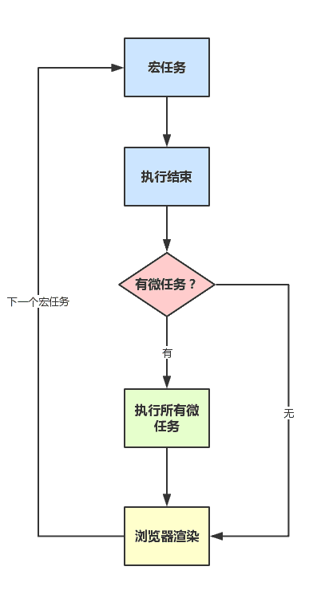

在浏览器运行环境下用JavaScript定时, 不就是window.setTimeout跟window.setInterval吗? 没错, 定时是一定用到这两个函数的. 但是大家应该也知道, 或者听说过, 这两个函数定时不一定准吧?
但是我们需要精确的定时, 要不然还定个🔨. 这篇文章就是对关于如何精确定时的探讨!
希望您在读这篇文章的时候, 应该知道浏览器的事件循环机制, 和Web Worker的相关知识. 不需要知道太多, 大体了解就可以.
为什么会不准
一般情况下, 定时器不准的原因很简单: JavaScript线程在忙于执行其他函数, 所以没来得及执行定时器的回调函数.
放张图在这里, 浏览器的事件循环, 不熟的同学可以参考!

话不多说, 上例子!
第1种情况
setTimeout(() => console.log('到点啦!'), 1000); |
最简单的情况了, 同步代码需要挂机3秒. 同步代码的执行是第一个宏任务, 只有它执行完以后, 才会关心有没有其他宏任务. 具体到这段代码, 就是只有while语句执行完了(需要3秒), 才会关心setTimeout的回调.
所以, 你至少要等3秒才能看到log信息! 这显然不是我们想要的!
第2种情况
同理, 如果上一个setTimeout的回调函数贼tm耗时, 那下一个setTimeout的回调函数就会被阻塞而延迟执行:
setTimeout(() => { |
第3种情况
上一个宏任务会干扰下一个宏任务的执行, 那在一个事件循环里的微任务和requestAnimationFrame也会对下一个宏任务有影响!
setTimeout(() => console.log('到点啦!'), 1000); |
这个也不难理解吧. requestAnimationFrame硬是干了3秒钟, 导致setTimeout即使已经在第1秒时排在宏任务队列里了, 但是却只能干等着!
第4种情况
前面我们说了setTimeout, 那setInterval呢?
setInterval(() => console.log('每秒一个体温填报, 定个时就不会忘啦!'), 1000); |
你肯定能想到, 只有3秒之后才会打印信息. setInterval在主线程阻塞的这3秒内, 触发了3次, 所以会往宏任务队列里追加3个任务, 所以只待3秒一到, 控制台立马打出:
每秒一个体温填报, 定个时就不会忘啦! |
然而, 事情却不是这样的, 控制台只打印了一行. 其实呢, 可以这样理解:
fun(); |
setInterval就是不断调用setTimeout. 第1秒的回调函数不执行, 根本就不会调用下一个setTimeout, 接下来的每秒回调函数也别想执行!
这4种情况, 总结下来就是: 事件循环是一个单向时间链, 中间有个耗时的, 后面的只能推迟进行!
当然, 实际的编写代码时, 肯定不会故意阻塞程序的执行, 我们肯定是要把每个任务的执行量尽可能压缩. 不过, 页面运行过程中总会有耗时的任务占用着主线程, 那我们应该怎么准确定时呢?
Web Worker登场
单一的线程会导致定时器定时不准, 那就再单独开一个线程, 专门用于定时.
Web Worker就是在渲染进程里单开一个线程, 可以把一些可能和主线程发生时间上的冲突的代码放在这里.
下面看实现方法:
const blob = new Blob([ |
可以在浏览器控制台里先运行以上代码, 这样每秒就会有一次log. 然后, 再输入如下代码:
const now = Date.now(); |
你就会发现, 这个3秒的任务不会干扰Worker线程的定时器, 每秒一次的log照样出现!
Worker线程自有一套事件循环, 所以自己玩自己的, 不会受到主线程阻塞的影响.
不过, 有几点需要注意.
注意点1
我发现, Worker的代码应该是新建Worker对象时周围的代码执行完之后, 才会执行. 换言之, 上面的例子里两段代码放在一起, Worker代码还是会延迟3秒执行的:
const blob = new Blob([ |
这样写的话, 只有while语句执行完以后, Worker内的代码才会执行. 显示上就是3秒后才会有一秒一次的log.
一般情况下, Worker对象初始化时不会有这种阻塞型的代码, 使用Web Worker来计时, 是为了防止其初始化之后网页运行时发生的主线程阻塞导致定时器任务被阻塞.
注意点2
每秒想要执行的代码一定要放在Worker代码里面, 不要放在主线程里, 比如下面的情况, 就没法保证一秒一log了:
const blob = new Blob([ |
然后再在浏览器控制台里输入:
const now = Date.now(); |
这样, 主线程被阻塞了, 但是Worker线程照常定时. 3秒以后, 主线程的宏任务队列堆积着3个来自Worker发来的进程间通信任务, 所以第3秒会把前三次的log一并打印出来.
注意点3
在Worker里定时并不会保证一定准时, 如果定时器的回调函数耗时大, 那肯定照样是不行的:
const blob = new Blob([ |
这样肯定是每3秒log一次啦.
你想啊, 每秒执行一次耗时大于1秒的代码, 你的电脑能吃得消么?
所以这种情况是不应该发生的…
关于”主线程”的思考
其实对于相对复杂的Web页面, 我们一定要把各功能模块抽离出来, 放在其他线程上.
主线程的作用基本来说就一个: 控制页面渲染. 如果某个耗时的代码放到主线程里执行, 它不光会影响前文说的定时器, 也会影响其他的各宏任务微任务, 更会影响页面渲染, 造成页面感觉上卡顿.